El Roble Academy
Chemistry Lab
By Ana Sophia Flores
|
Start
|
|
introduction and hypothesis
|
materials and procedure
|
Results and conclusions
|
materials and procedure
PH Scale
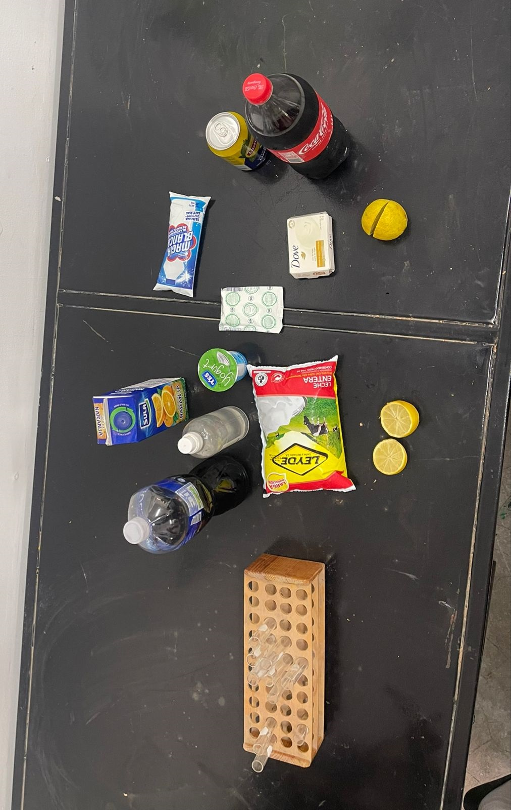
Materials
• Red cabbage juice (provided by your teacher – used as a natural pH indicator)
• Clear plastic cups or test tubes (for mixing substances with the indicator)
Everyday products to test, such as:
• Yogurt
• Lipton tea
• Milk
• Orange juice
• Alcohol
• Lemon juice
• Chloride solution
• Bicarbonate solution
• Pineapple juice
• Ronald pie
• Nelson pie
Procedure
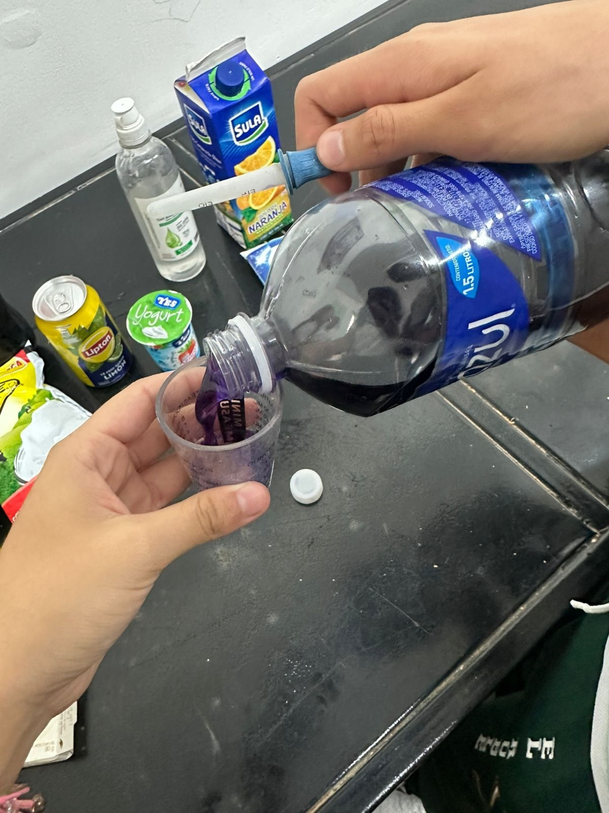
• Prepare your materials.
Gather red cabbage juice, clear plastic
cups or test tubes, household substances,
a plastic spoon or dropper, and your pH observation sheet.
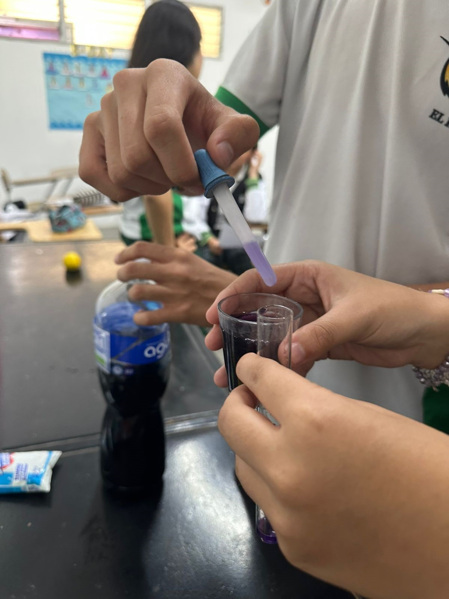
• Label the cups or test tubes.
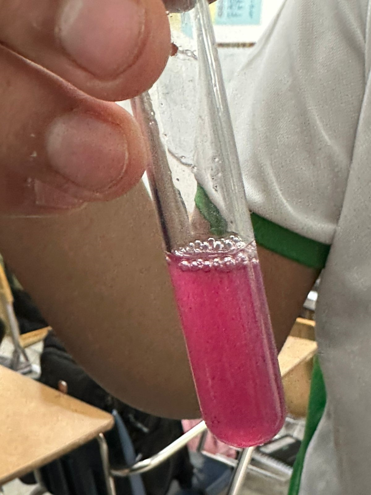
• Prepare your materials.Gather red cabbage juice,
clear plastic cups or test tubes,household substances,
a plastic spoon or dropper, and your pH observation sheet.
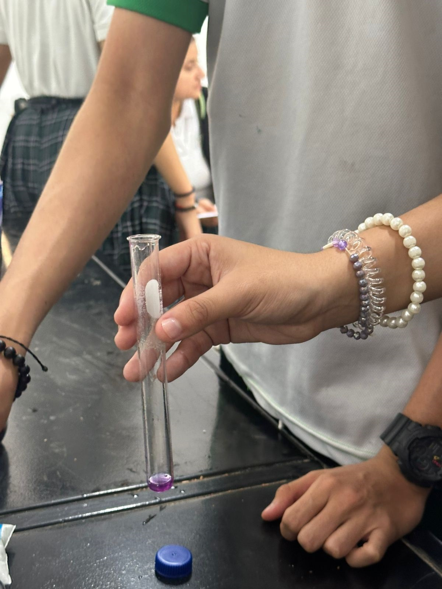
• Label the cups or test tubes.
Write the name of each substance you
will test on a separate cup or tube.
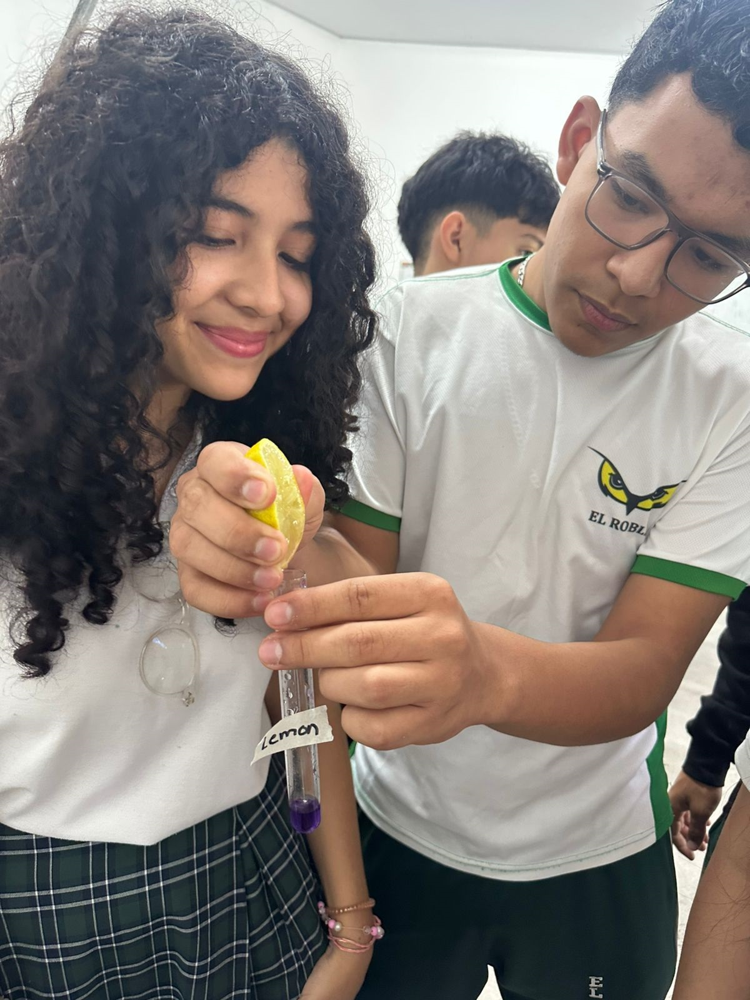
• Pour red cabbage juice into each container.
Fill each cup or test tube about halfway with
red cabbage juice.
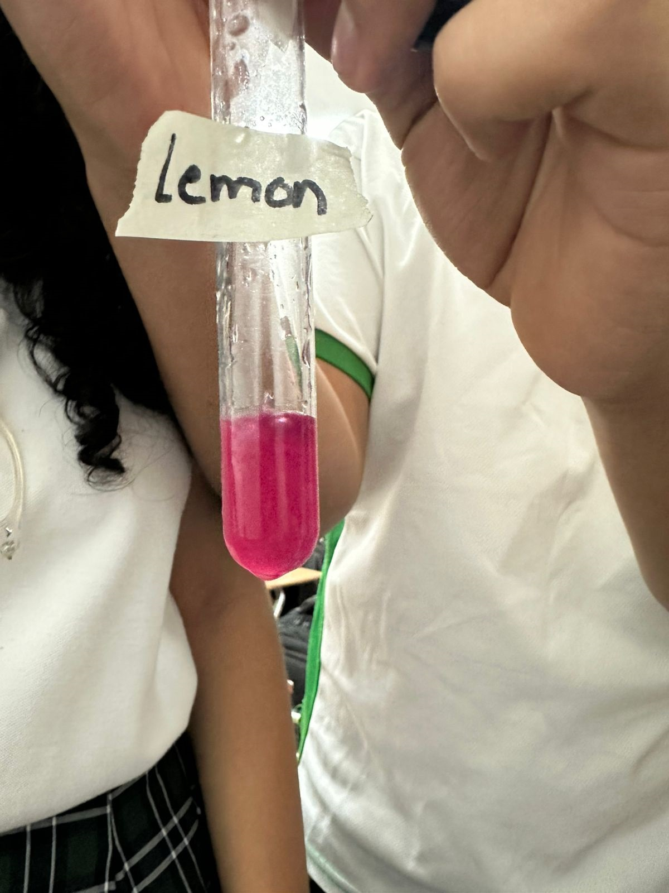
• Add one substance to each cup.
Use a clean spoon or dropper to add a
small amount (a few drops or a small scoop)
of one household substance to each labeled cup.
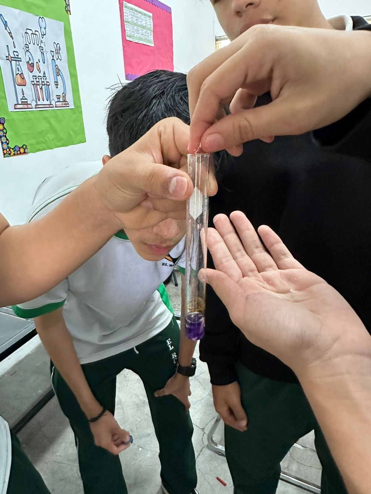
•Observe the color change. Watch what happens
when the substance mixes with the cabbage juice.
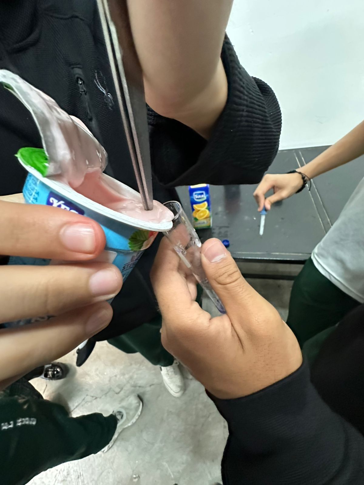
The color will change depending on the pH:
Red/pink = acidic
Purple = neutral
Blue/green/yellow = basic
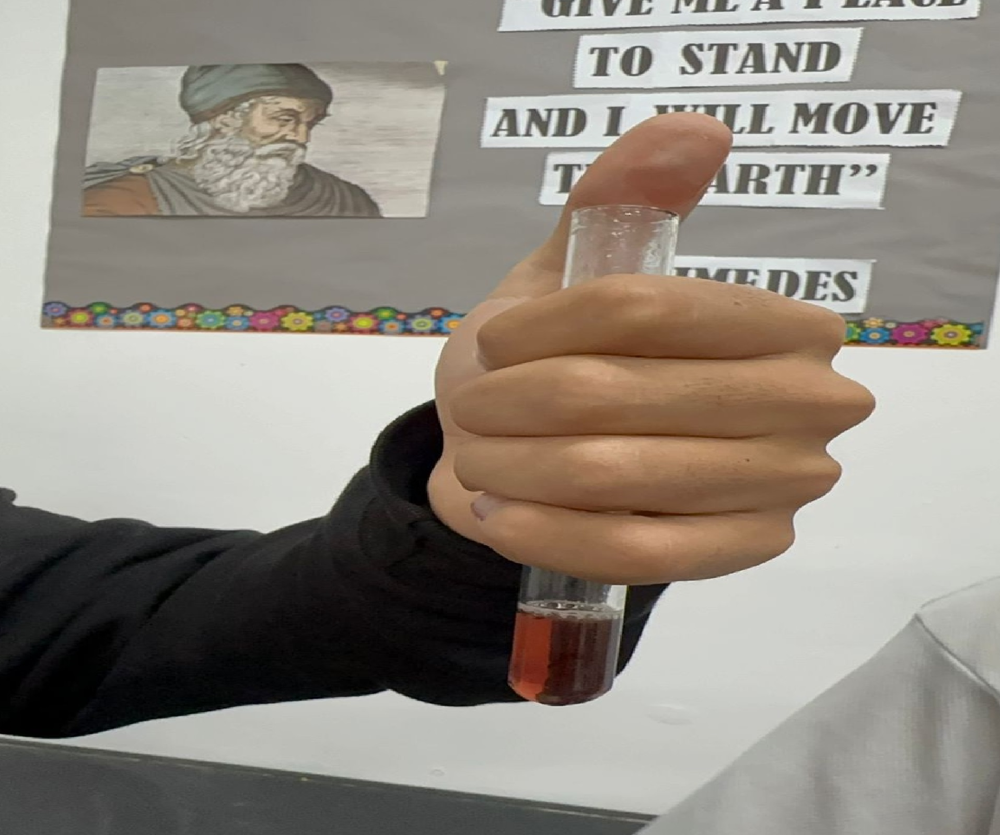
• Record your results.
On your pH Observation Sheet, write down the
name of the substance, the color.
it turned, and whether it is
acidic, neutral, or basic.
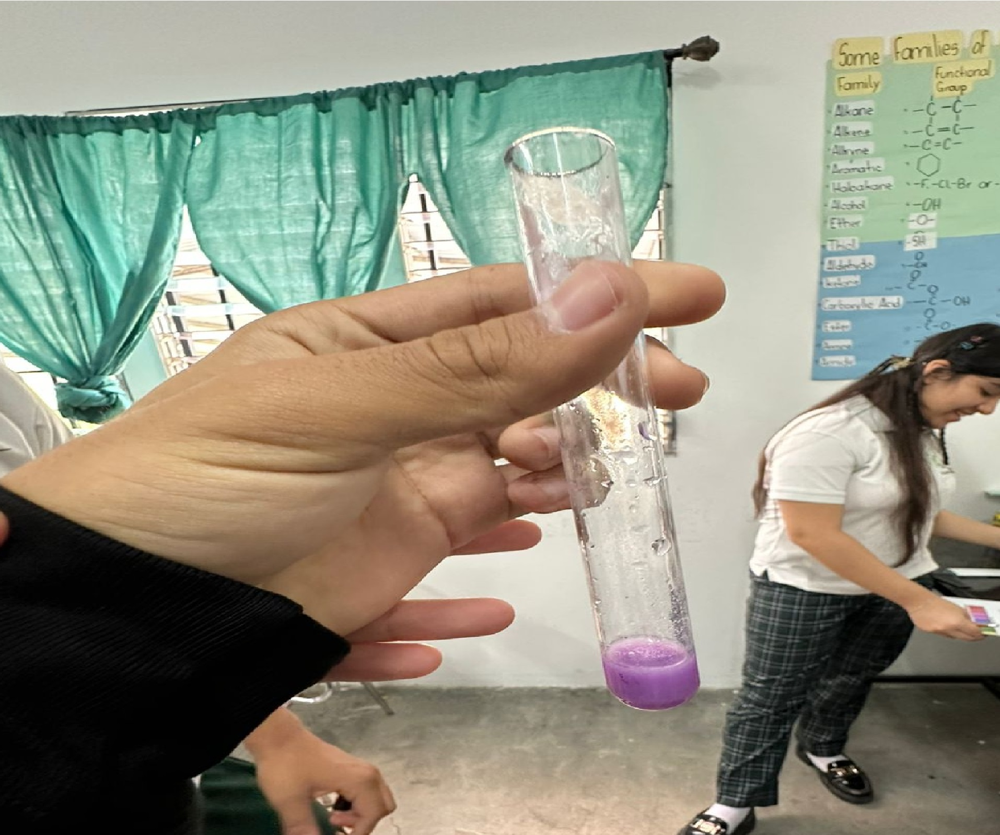
• Repeat for all substances.
Test each household item one at a time,
using clean tools for each to avoid mixing.
Write the name of each substance you will
test on a separate cup or tube.
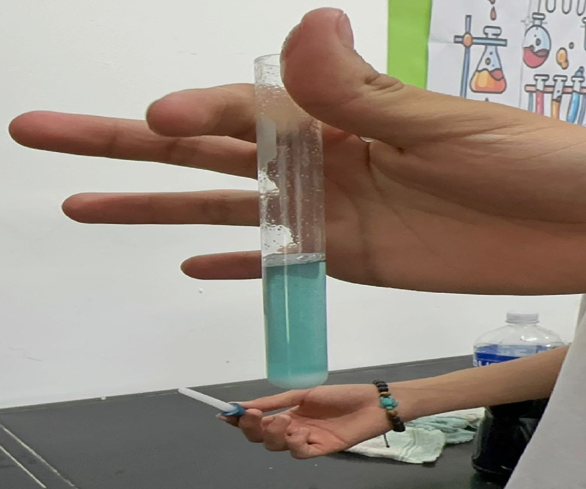